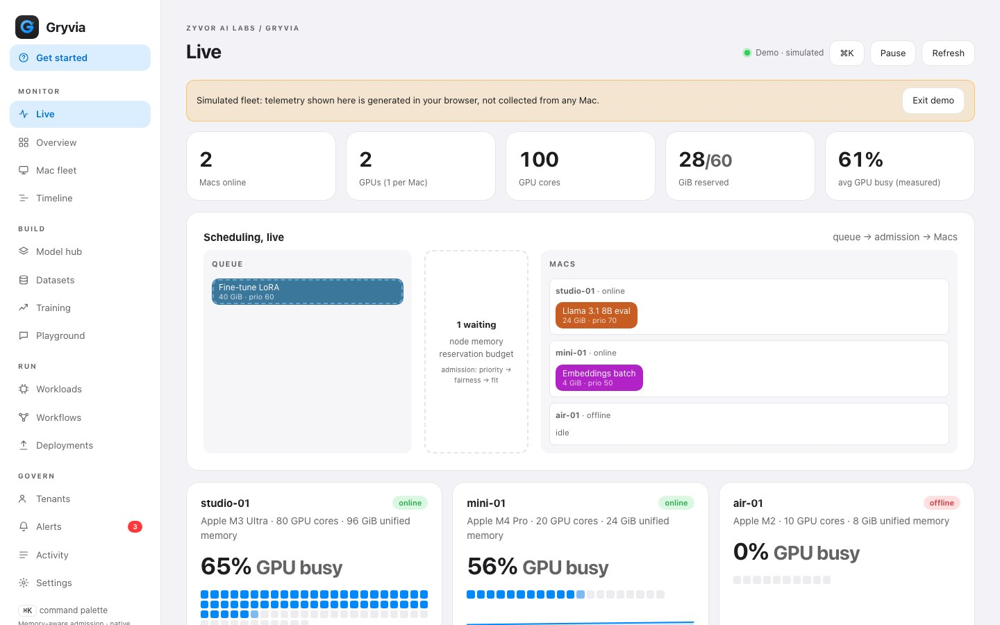
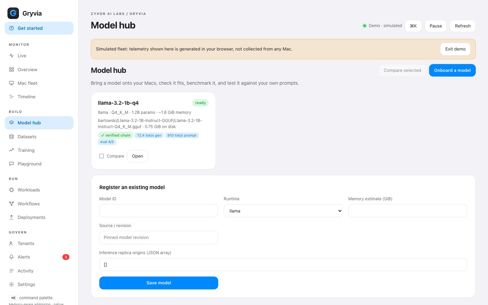
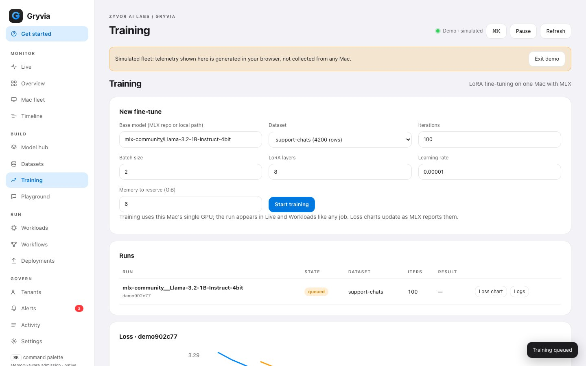
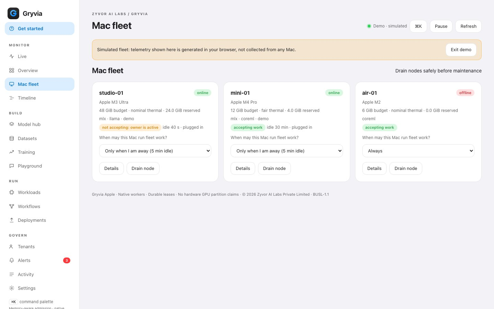
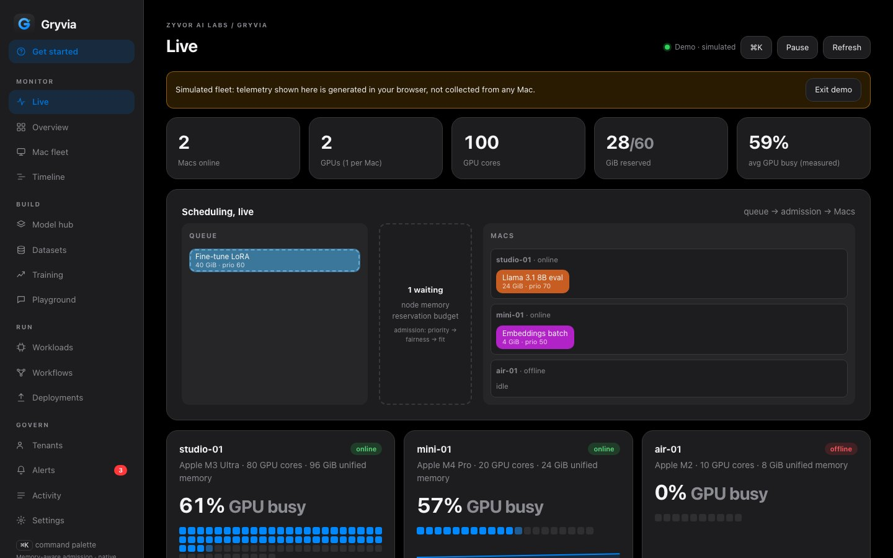
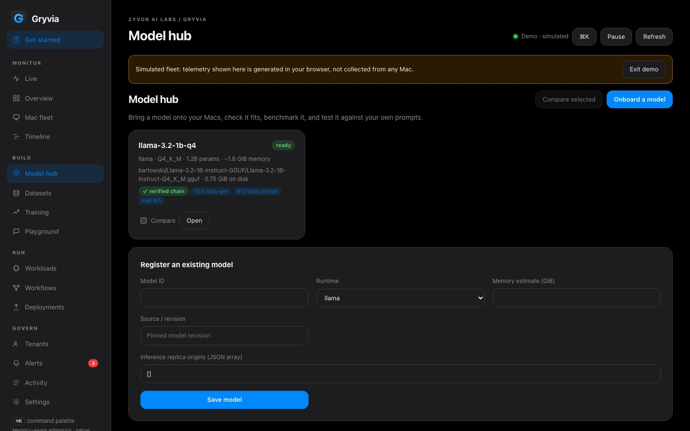
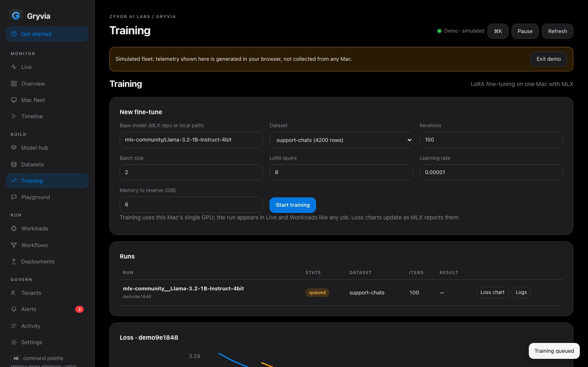
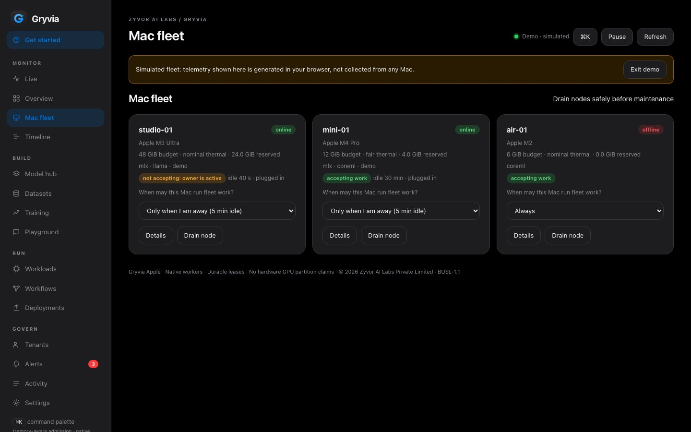

Your Macs, scheduled.
A multi-tenant control plane for Mac fleets. It admits and places inference, fine-tuning and benchmark jobs against each Mac's unified-memory budget, with quotas, leases, provenance and a live view of every GPU.

Screenshots on this page use simulated fleet data and are labelled as such in the product.
One GPU per Mac, made visible.
Every Apple Silicon Mac has exactly one GPU with many cores. Gryvia reads the core count and the measured busy percentage straight from macOS, so the fleet's GPUs are counted and shown, not guessed.
Utilisation is the whole Mac's GPU load, including other apps. Reservations are admission bookkeeping, not a live memory meter. The product says so wherever it shows them.
Illustration. In the app each cell is a real GPU core, lit in proportion to the measured busy percentage.
Who gets which Mac, when, and within what limits.
Tools like exo and MLX distributed answer how to split one model across machines. Gryvia answers the operational question for a fleet: which job runs where, in what order, under whose quota.
Admission, not hope
Reservations against each Mac's unified-memory budget, tenant quotas and weights, priorities, dependencies and retries, decided in one SQLite transaction.
Leases that fail safe
Workers hold short renewable leases. A stale worker cannot finish a job it lost, and a cancelled job keeps its reservation until the process has stopped.
Observable
Live GPU cores, scheduler decisions with reasons, Prometheus metrics, per-tenant usage and energy estimates, and an audit trail.
A small control plane and a native agent.
From a Hugging Face file to a streaming endpoint.
Every step is a scheduled job on a Mac of your choice, with the same quotas, logs and audit trail.
Measured on one Mac mini (Apple M6, 12 GPU cores, 16 GiB)
| Run | Result | Notes |
|---|---|---|
| Llama-3.2-1B-Instruct Q4_K_M, llama-bench | 5,999 tok/s prompt · 151 tok/s generation | 512 prompt / 128 generated tokens, 3 repetitions, idle Mac, one run |
| Same model through the gateway, streaming | 0.28 s to first token | 120 chunks in 1.07 s |
| MLX LoRA on Llama-3.2-1B-Instruct-4bit, 120 iterations | 3 / 72 → 71 / 72 held-out phrasings | 24 facts × 5 stems; unseen stems; keyword scoring; one seed. With self-rehearsal 65 / 72 and no regressions on general questions (23 / 24) |
Small data and a single seed: these show the pipeline works end to end on real hardware, not general fine-tuning quality. Full methodology and caveats are in TEST_RESULTS.md.
Run when the owner is away. Yield the moment they return.
A desktop Mac is not a server. Each Mac has an owner policy: always, only when idle, or paused, with battery and Low Power Mode rules and a call guard. Idle detection reads only the time since the last input event, lock and display state, power source and whether an input device is running. No window titles, keystrokes or app names.
Know which Mac produced a model, and that its record was not altered.
Each agent has an Ed25519 identity key (CryptoKit, kept in a 0600 file). When a job finishes the agent signs a statement binding the job, its spec hash and its result. The control plane pins each node's key on first contact and verifies signatures with a small vendored verifier, then keeps a chain across download, fine-tune, fuse and quantise. A policy can refuse to deploy a model without a verified chain.
Let an assistant check the fleet. You decide if it may act.
The MCP server is read-only by default. Write tools (submit, cancel, set a Mac's policy) exist only when you start it with --allow-write, and they run with the role of the token you give it, so a tenant token scopes an agent to one tenant. Shortcuts actions cover fleet status, a demo job and pausing a Mac.
# read-only MCP server over stdio GRYVIA_URL=http://127.0.0.1:8443 \ GRYVIA_TOKEN=… \ python3 mcp/gryvia_mcp.py # tools: gryvia_fleet · gryvia_jobs · gryvia_job_logs # gryvia_models · gryvia_results · gryvia_run_metrics # with --allow-write: submit · cancel · set_node_policy
Web dashboard and native Mac app.







The native app mirrors these screens with a grouped sidebar, a menu-bar item to pause fleet work on this Mac, and a Dock badge for running jobs.
Works alongside the tools you already use.
| Tool | What it is great at | How Gryvia relates |
|---|---|---|
| exo, MLX distributed | Running one large model across several Macs | Different question. A future executor integration could let Gryvia schedule such jobs. |
| Ollama, LM Studio | Simple single-machine model serving | Gryvia can sit above machines that each run a server. |
| llama.cpp, MLX | The runtimes themselves | Gryvia drives them: llama-bench, llama-server, mlx_lm lora, mlx_lm server. |
| vllm-metal and other engines | Batched serving inside one process | Engine-level; Gryvia is fleet-level. |
| Kubernetes, Nomad, Slurm | General schedulers | Gryvia adds the Apple unified-memory and owner-presence model. |
Based on each project's public documentation as reviewed on 14 October 2026; these tools move quickly, so check them. More detail in docs/COMPARISON.md.
Start in three minutes, with or without hardware.
Look around
The dashboard has a demo mode with a clearly labelled simulated fleet. No install.
Open the live demoRun it on this Mac
# terminal 1: control plane (creates ./local with tokens) make run-server # terminal 2: turn this Mac into a worker make run-agent # then open http://127.0.0.1:8443 and press “Run demo job”
Install the app and enrol a fleet
Download the DMG or pkg from the releases page, or use Homebrew once the tap is published. Then make deploy MINI=your-mac installs the agent and control plane on another Mac over ssh.
# when the tap is published
brew install --cask zyvorai/tap/gryvia
shasum -a 256 -c Gryvia-0.3.0.dmg.sha256
Straight answers.
Is it open source?
It is source-available under the Business Source License 1.1: you can read, modify and use it for non-production purposes, and each version converts to Apache-2.0 four years after its first public release. It is not an OSI open-source licence.
Does it split one model across several Macs?
No. For that, look at exo or MLX distributed. Gryvia decides which whole job runs on which Mac and under whose quota.
Is GPU utilisation per job?
No. It is the whole Mac's GPU load as macOS reports it, including other apps. Reservations are admission bookkeeping, and energy figures are estimates.
Can I use a Mac that someone is also working on?
Yes: set its policy to “only when I am away”. Work starts after the idle time you choose and yields when the owner returns. Battery, Low Power Mode and call guards apply.
What does it send where?
Agents poll your control plane outbound. Nothing is sent to Zyvor. Models are downloaded only from huggingface.co or hf.co, with a size cap and a recorded SHA-256.
Which Macs and runtimes?
Apple Silicon on macOS 15 or later. llama.cpp (GGUF), MLX and Core ML wrappers ship in the box, and runtimes are enabled per Mac in its own config.